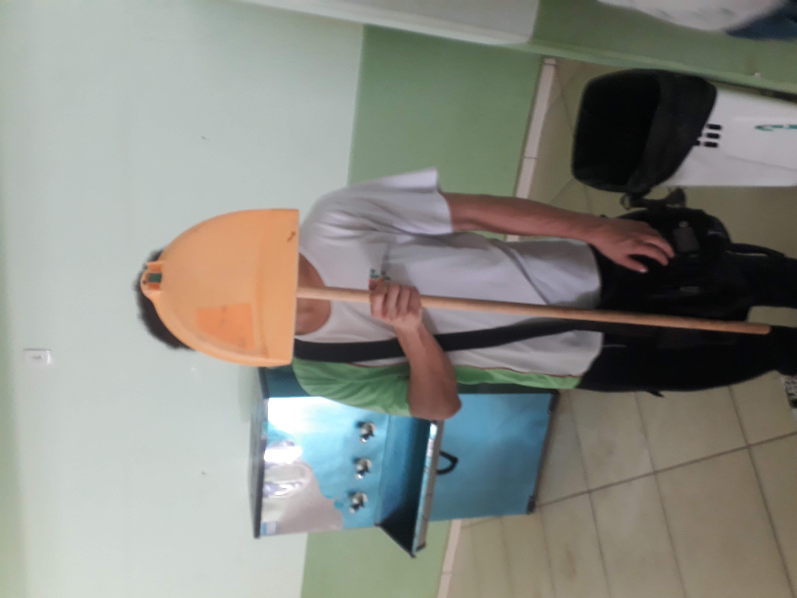
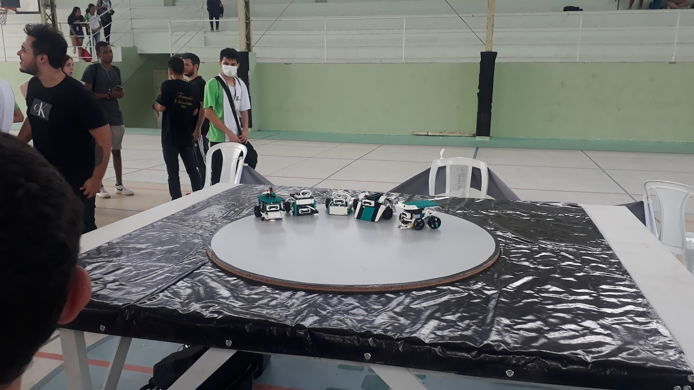
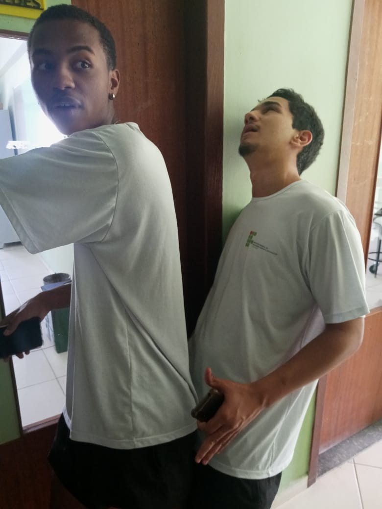
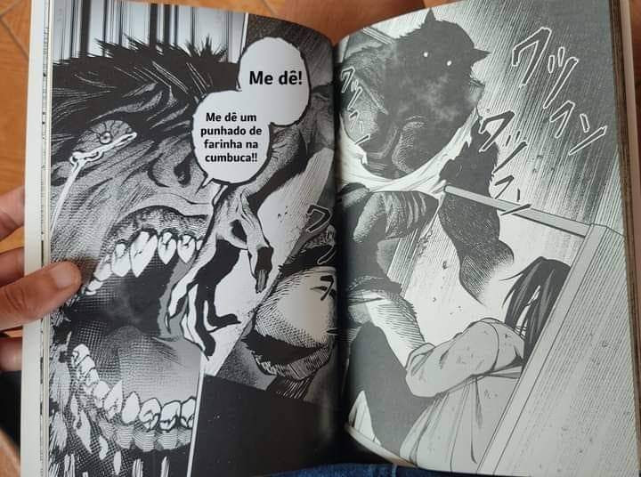
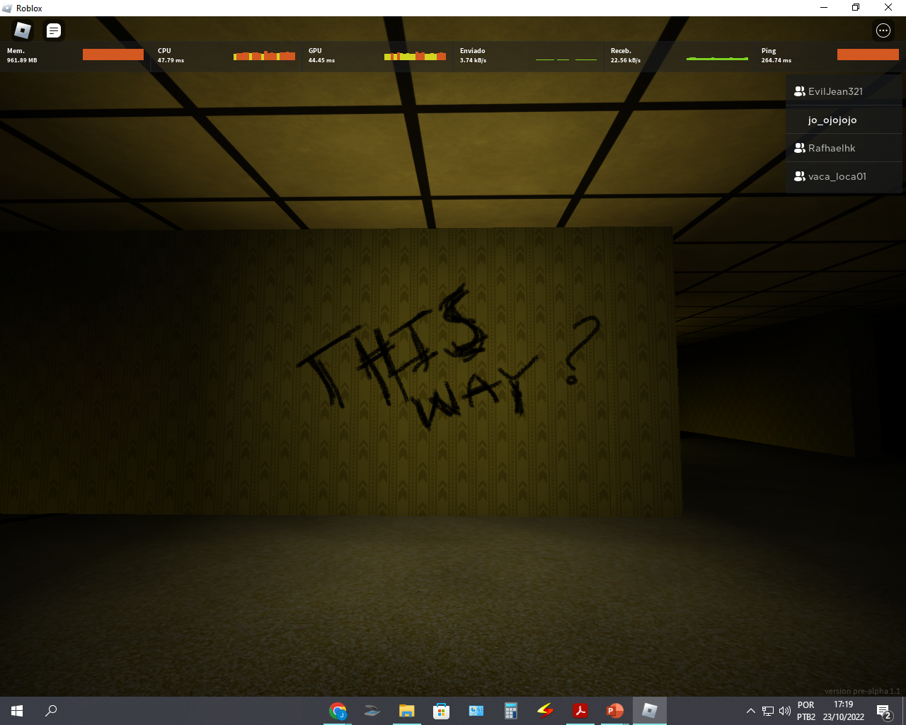
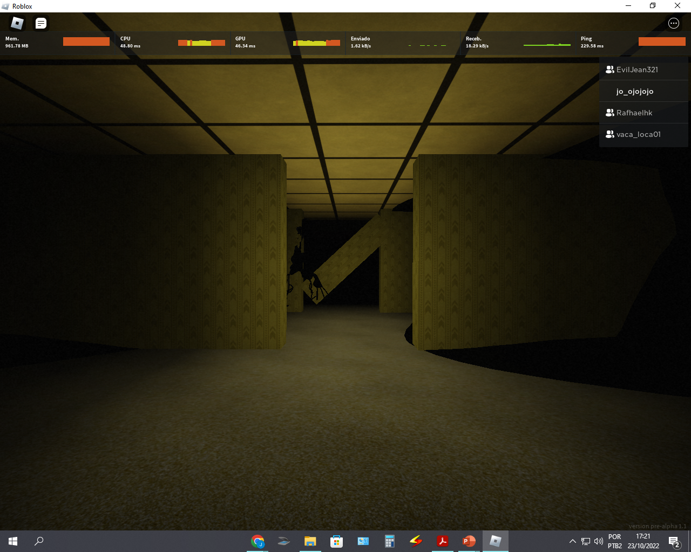
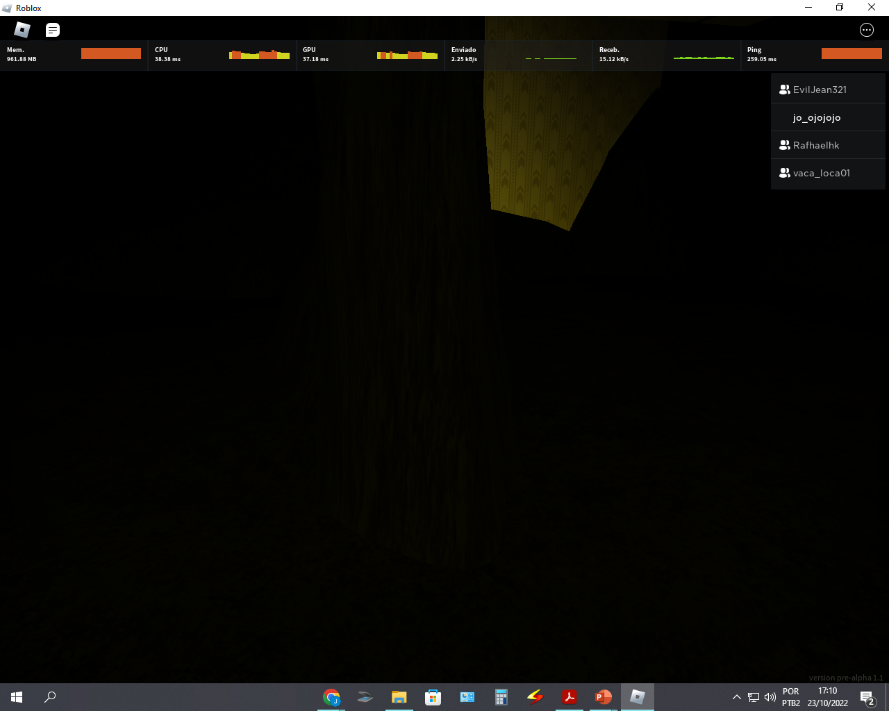
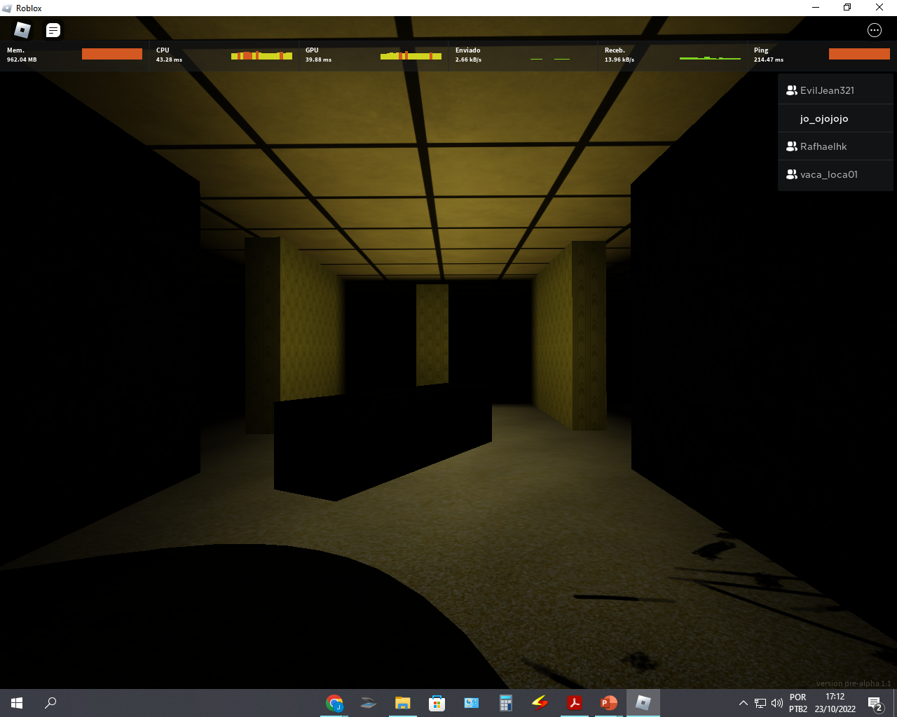
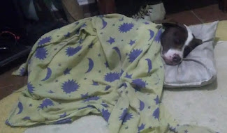

Época que eu era feliz e não sabia
Alegria, após 3 horas consigo programar o ataque
Lamentação, programação de combo do Super Android 13
Sofrimento, programação de combo do Goku Black
2TI maioral

Ditador do IFF, Caio ditador opressor

Espadachim do IFF, Diogo IFF no Yaiba

Guardião do IFF, Coelho Guardião do IFF

Ditador do IFF, ditador Caio oprimindo seu lacaio

Os Robôs, os robôs mais brabos do IFF
Vídeo das memórias

Imagem mais sus das minhas memórias

KKKKKKKKKKKKKKKKKK

...

Partida de Doors

Backrooms andar negativo: enfim chegamos ao andar que demarca o final da jornada, e ele simplesmente é inteiramente escuro e com as paredes pretas. A única coisa que temos para nos localizar são nossos assobios e tão pouco o teto. Ver mais

Saída? Encontramos uma direção para seguir que supostamente apontava para a saída

Desespero: seguimos a direção e nos levou à entidade que guarda esse andar. Ela era praticamente invisível por conta de ser escura, e o nível mais ainda.

Corrida: estamos correndo pelas nossas vidas enquanto o campo continua escurecendo e já não temos visão nenhuma do monstro

Saída: finalmente escapamos da criatura e encontramos a saída

Infelizmente, partiu em um dos momentos mais difíceis da minha vida. Era muito mais que um pet; era um companheiro.

Hollow Knight, chegada à Cidade das Lágrimas. A capital de Hallownest — o que nos aguarda à frente? A música e o design passam uma sensação de medo, ou será tristeza? No mapa está demarcando um memorial feito ao Receptáculo Puro de Hallownest.
Chegada ao memorial do Receptáculo. Aqui descobrimos o sentido da jornada em Hallownest: no começo do jogo vemos o casulo negro parecido com uma prisão onde está o Receptáculo, mas algo está errado — ele foi selado lá por três anciãs.